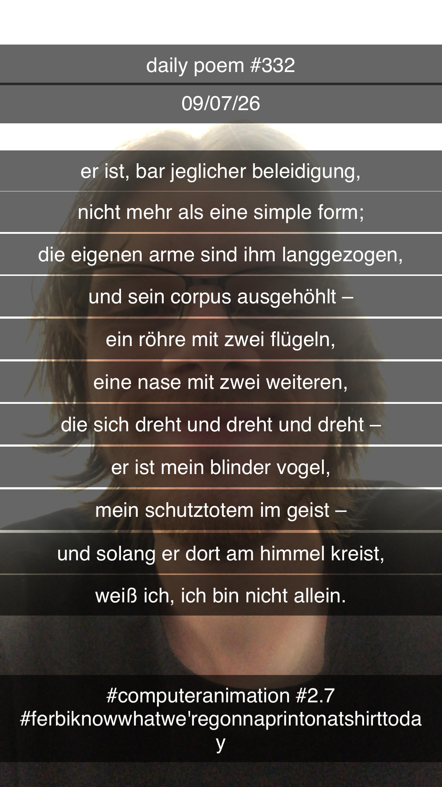

Flugzeug mit Propeller
[332]Er ist, bar jeglicher Beleidigung,
Nicht mehr als eine simple Form;
Die eigenen Arme sind ihm langgezogen,
Und sein Korpus ausgehöhlt –
Eine Röhre mit zwei Flügeln,
Eine Nase mit zwei weiteren,
Die sich dreht und dreht und dreht –
Er ist mein blinder Vogel,
Mein Schutztotem im Geist –
Und solang' er dort am Himmel kreist,
Weiß ich, ich bin nicht allein.
